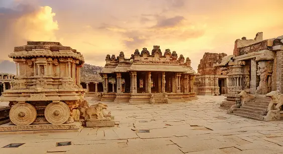
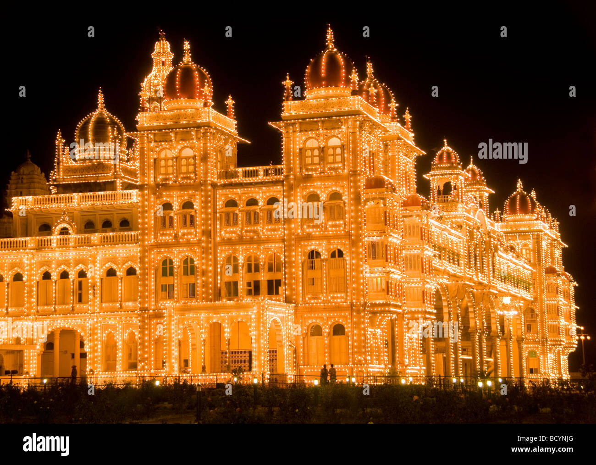
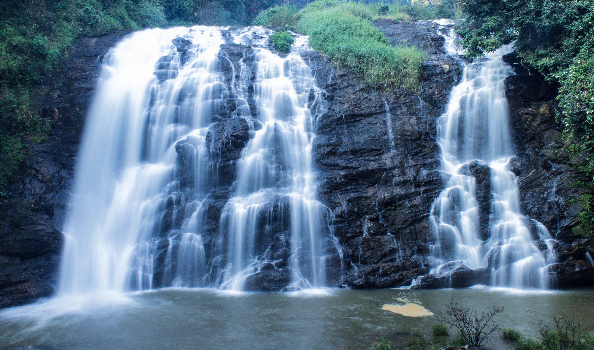

Discover Karnataka: Where Heritage Meets Adventure
Karnataka, the sixth largest state in India, has been ranked as the third most popular state in the country for tourism in 2014. It is home to 507 of the 3600 centrally protected monuments in India, second only to Uttar Pradesh.The State Directorate of Archaeology and Museums protects an additional 752 monuments and another 25,000 monuments are yet to receive protection
North Karnataka has monuments that date back to the 5th century. Kannada royal capitals are also present here. Monuments constructed by the Badami Chalukyas monuments are located at Pattadakal, Aihole and Badami. Aihole has been called the cradle of Indian architecture and has over 125 temples and monuments built between 450 and 1100 CE. Rashtrakuta monuments at Lokapura, Bilgi and Kuknur and Kalyani Chalukyas monuments built in Gadag style of architecture at Lakkundi, Gadag, Itagi (in Koppal District) and the Vijayanagar empire temples at Vijayanagara are some examples. Hampi in Bellary district has ruins spread over an area of 125 km
Coastal Karnataka is the stronghold of Hindu and Jain pilgrimage spots with Udupi and its many temples being the centre of Dvaita philosophy, Gokarna is known for Vedic studies, Sringeri has the first of the Shankaracharya mathas and is important for its Advaita philosophy, Karkala and Mudabidri are well known places of Jain worship and Vaishnava rituals. Exquisite Vijayanagar temples built in Chalukya – Malabar region combinational style are seen in Bhatkal, Kumta, Shirali etc. The warm beaches of Karnataka are mostly unspoiled
Karnataka is blessed with over 300 km of pristine coastal stretch. Netrani Island of Uttara Kannada is known for coral reefs. St. Mary's Island, a few kilometres from Udupi has basalt rock formations. Sunny beaches at places like Malpe, Murdeshwar, Maravanthe, Gokarna, Kumta have spectacular mountains to the east. Agumbe, Kodachadri hills, Kemmangundi, are just a few of many hill stations that straddle the coast providing tourists sun and greenery. Unlike many crowded hill stations in South India, the hill stations of Karnataka are still mostly undiscovered and pristine.
South Karnataka is a unique combination of spectacular vesara style Hoysala architecture, colossal Jain monuments, colonial buildings and palaces of the Kingdom of Mysore, impregnable fort at Chitradurga and densely forested wildlife sanctuaries that offer some of the best eco-tourism available in the country.
MOST BEAUTIFUL PLACES TO VISIT IN KARNATAKA